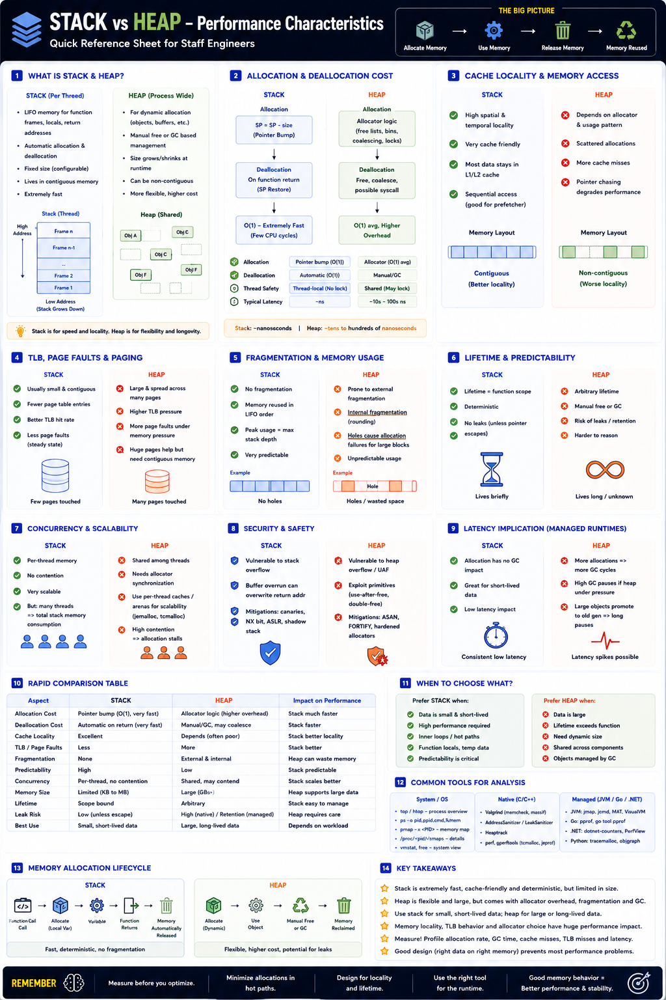

Allocation speed, cache locality, GC — Staff Engineer level
The Big Picture
Where memory is allocated dramatically affects allocation speed, CPU cache efficiency, GC overhead, fragmentation, thread scalability, and tail latency (P99).
Choosing the correct memory region is one of the biggest performance optimizations.
Allocation Speed
Stack — O(1), near-zero cost
Heap — O(1) avg, higher constant
Stack allocation is generally 10–100× faster than heap allocation.
Allocation Cost Comparison
| Operation | Stack | Heap |
|---|---|---|
| Allocation | Pointer bump | Allocator logic |
| Deallocation | Automatic | free() / GC |
| Complexity | O(1) | O(1) avg, higher constant |
| Overhead | Extremely Low | Medium–High |
Memory Locality & CPU Cache
Stack — contiguous
Heap — scattered
TLB Pressure & Fragmentation
Stack
Heap
Concurrency & Thread Safety
Stack — thread-local
Each thread owns its own stack. No locking, no contention — excellent scalability.
Heap — shared
All threads share the heap. Allocator must manage synchronization via per-thread arenas (jemalloc, tcmalloc, mimalloc).
Garbage Collection Impact
Stack
Objects disappear on function return. No GC required.
Heap
Objects accumulate → Young Gen → Minor GC → Old Gen → Major GC. Heavy heap churn = more GC pauses + higher P99.
Escape Analysis — Runtime Optimizations
Modern runtimes try to keep short-lived objects on the stack whenever possible.
| Runtime | Mechanism | Benefit |
|---|---|---|
| Java | JIT Escape Analysis | Objects that don't escape method stay on stack |
| Go | Compiler Escape Analysis | Non-escaping values → stack; escaping → heap |
| Rust | Ownership Model | Default stack; Box<T> for explicit heap |
| C++ | Explicit (developer) | Locals → stack; new/malloc → heap |
Security Considerations
Stack Risks
Mitigations
Heap Risks
Mitigations
Real-World Examples
| System | Stack Use | Heap Use | Key Point |
|---|---|---|---|
| Spring Boot API | Local counters, return values | Request DTOs, objects | Too many temp heap objects → Minor GC frequency |
| Nginx | Function variables, metadata | Memory pools for buffers | Very low allocation overhead |
| RocksDB | Local state | Off-heap cache buffers | No GC on cache → predictable latency |
| Go microservices | Escape-analyzed temporaries | Long-lived goroutine state | Lower GC pressure via escape analysis |
Staff Engineer Thinking
Junior
Should I use stack or heap?
Senior
Will this increase GC?
Staff asks
Production Failure Scenarios
High P99 Latency
Cause: Excessive temporary heap allocations · Fix: Reduce allocations or rely on escape analysis
High CPU Usage
Cause: Allocator contention · Fix: Use jemalloc/tcmalloc or thread-local arenas
High GC Frequency
Cause: Heavy heap churn · Fix: Reuse objects or reduce allocation rate
Large Memory Footprint
Cause: Too many threads with large stacks · Fix: Reduce thread stack size or use async/event-loop architecture
Staff Engineer Decision Framework
| Scenario | Recommended Approach |
|---|---|
| Function-local temporary data | Stack |
| Large shared buffers | Heap |
| Hot code path | Prefer Stack |
| Long-lived cache | Heap |
| Large JVM service | Heap + GC tuning |
| Low-latency trading engine | Stack + Off-heap buffers |
| High-concurrency server | Thread-local allocators |
Stack vs Heap — Full Comparison
| Feature | Stack | Heap |
|---|---|---|
| Allocation Speed | Extremely Fast | Slower |
| Locality | Excellent | Depends on allocator |
| Fragmentation | None | Internal & External |
| Lifetime | Deterministic | Arbitrary |
| Thread Safety | Thread-local | Shared |
| GC Required | No | Usually Yes |
| Cache Efficiency | Excellent | Moderate |
| Best Use | Small, temporary objects | Large, dynamic objects |
Production Debugging Checklist
perf stat)/proc/buddyinfo)numastat)Key Takeaways
